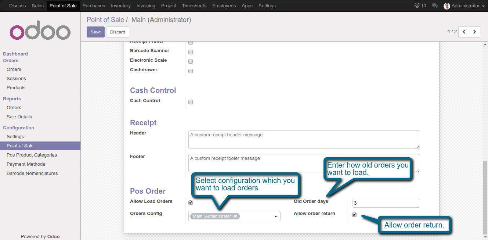
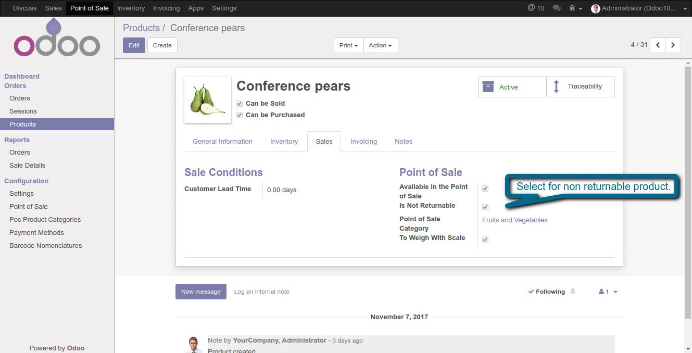
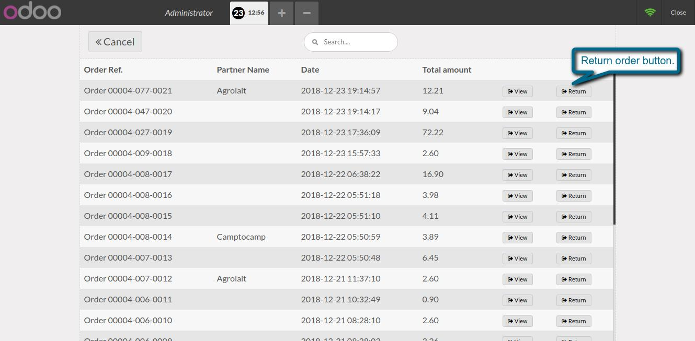
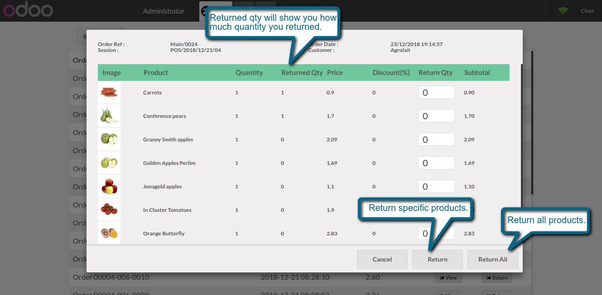
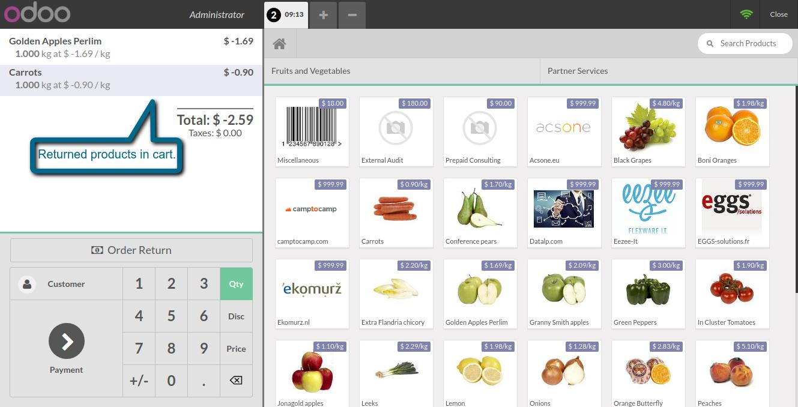

Pos order return
Easy way to return order from point of sale
1. POS order return config.

2. Specify product is returnable or not.

3. POS order return button.

4. Return order popup. We can return all product and partially also.

7. Returnable products in cart.

If You Need Any Help Please Contact
Email Id: dev.webveer@gmail.com